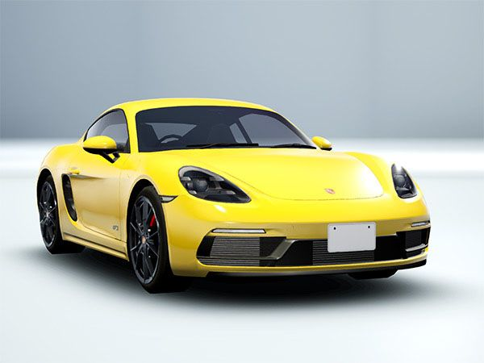
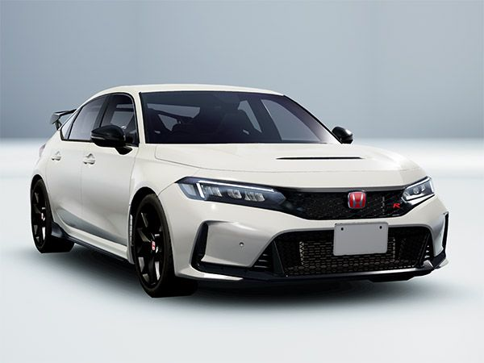

1990 Honda NSX

The 1990 Honda NSX (New Sportscar eXperimental) is a groundbreaking
sports car featuring a lightweight aluminum chassis and body. It was the
first mass-produced car to use such extensive aluminum construction,
enhancing performance and efficiency. The NSX was powered by a
mid-mounted 3.0L V6 engine with Honda's innovative VTEC (Variable Valve
Timing and Lift Electronic Control) system.
2003 Mazda RX-8

The 2003 Mazda RX-8 is a unique sports car known for its rotary engine,
the Renesis. Unlike traditional piston engines, the rotary engine
operates on a different principle, offering smooth power delivery and
high revving capabilities. The RX-8 features a 1.3L rotary engine,
rear-wheel drive, and distinctive freestyle rear doors for easy rear
seat access.
2017 Porsche Cayman 718

The 2017 Porsche Cayman 718 is a mid-engine sports car that combines
agility and power. It is powered by a turbocharged 2.0L flat-four
engine, delivering impressive performance. "718" refers to Porsche's
historic race cars from the late 1950s and early 1960s, emphasizing its
connection to motorsport heritage. Key features include Porsche
Stability Management (PSM) and a precise six-speed manual transmission.
2022 Honda Civic Type-R

The 2022 Honda Civic Type-R is a high-performance hatchback designed for
track and road. It features a turbocharged 2.0L inline-four engine
producing impressive power and torque. Key technologies include Honda's
Dual Axis Strut Front Suspension for improved handling and the advanced
Honda Sensing safety suite.